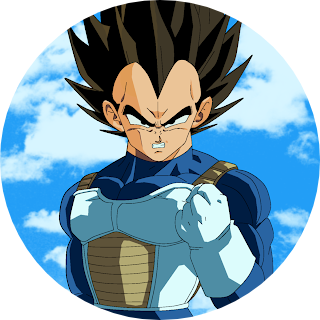

Datos
Fecha de Nacimiento: 15 de diciembre del Año 732
Procedencia: Planeta Vegeta
Ocupación: Guerrero Z, Príncipe de los Saiyajin
Raza: Saiyajin
Contacto
Correo Electrónico:
 vegetita@saiyajin.dbz.es
vegetita@saiyajin.dbz.es
Redes Sociales:
 Vegeta.Linkedin
Vegeta.Linkedin
 Vegeta.Twitter
Vegeta.Twitter
 Vegeta.Instagram
Vegeta.Instagram
Apariciones
- Dragon Ball Z
- Dragon Ball Z Kai
- Dragon Ball GT
- Dragon Ball Super
- Dragon Ball Heroes